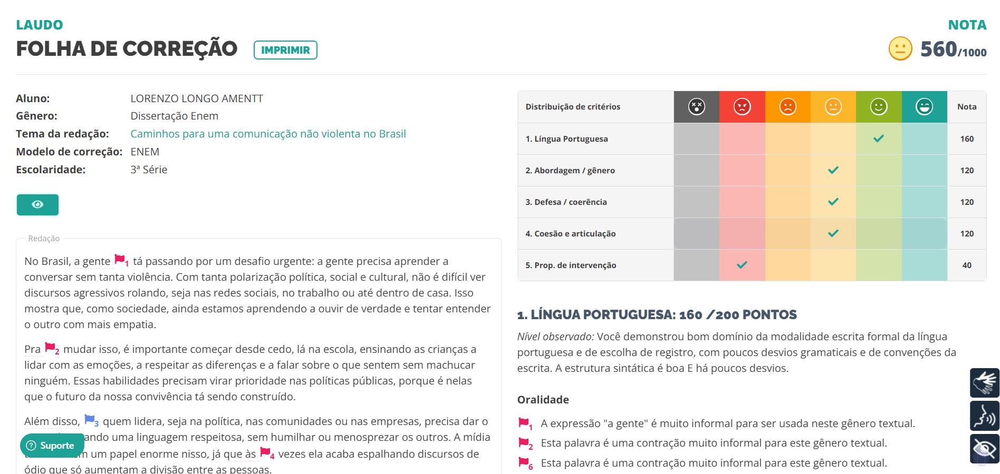

Nota da redação do terceiro trimestre.
Você deverá redigir uma Carta de Intenção solicitando sua entrada em uma instituição de ensino superior. Escolha uma universidade e um curso que você realmente tem interesse.
Acessar AtividadeCrie um reel ou vídeo curto (30-60 s) sobre um dos locais de Florianópolismencionados na obra Primeiro de abril: narrativas da cadeia, de Salim Miguel, relacionando o espaço com a narrativa. Publique seu vídeo na Revista Literária do seu grupo, na seção “Primeiro de abril”.